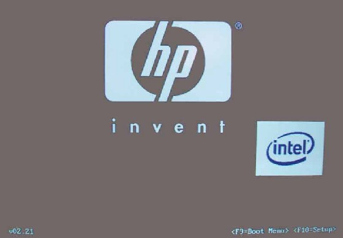
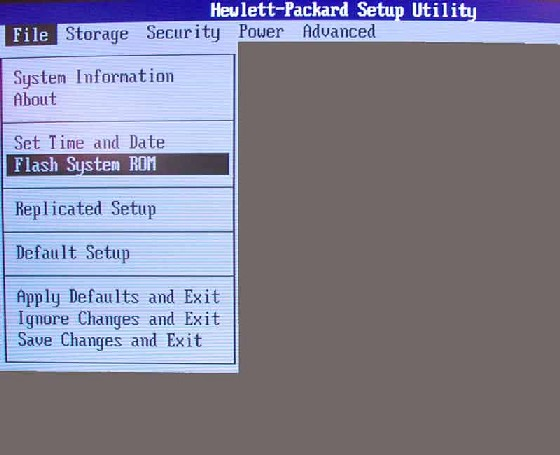
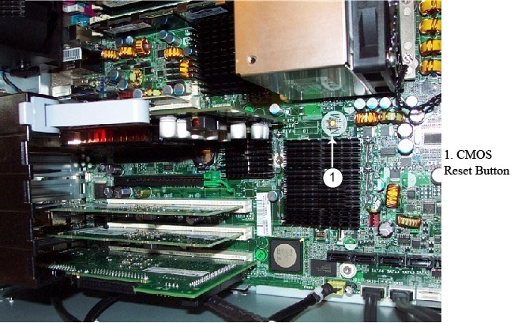

Operating Documentation
Direction 5193755-800, Rev# 8
BrightSpeed (Ltd. Access) Service Methods - Adv
Operating Documentation |
| Required Persons | Preliminary Reqs | Procedure | Finalization |
|---|---|---|---|
| 1 | Timing Not Applicable | Timing Not Applicable | Timing Not Applicable |
The BIOS of the computer is a collection of machine language programs stored as firmware in ROM. The BIOS ROM includes such functions as POST, PCI device initialization, Plug 'n Play support, power management activities, and the BIOS Setup (F10) Utility. The BIOS Setup (F10) Utility enables you to change factory default settings and set or change the system configuration based on the Host PC hardware or system functionality requirements.
The BIOS Flash Code for programming the Host PC BIOS ROM is available on CD-ROM media (see Preliminary Requirements). In addition, the BIOS Flash Code is available from HP in the form of a downloadable CD image (ISO) file, which is used to create the above-mentioned BIOS CD.
| Last revised: | 26 June 2008 |
| Item | Qty | Effectivity | Part# | Manufacturer | |
|---|---|---|---|---|---|
| V 02.24 HP xw8400 BIOS CD | 1 | - | 5263345 | - | |
| Standard FE Toolkit | 1 | - | - | - | |
| Item | Qty | Effectivity | Part# | Manufacturer |
|---|---|---|---|---|
| 1.44 MB Floppy Diskette | 1 | - | - | - |
| ELECTROCUTION HAZARD | |
| DISCONNECT AC POWER FROM THE HOST PC BEFORE RESEATING OR REPLACING COMPONENTS BECAUSE THERE IS POWER TO THE SYSTEM BOARD EVEN WHEN THE HOST PC IS POWERED DOWN. | |
| USE PROPER LOCKOUT / TAGOUT PROCEDURES BEFORE REPLACING THE COMPONENTS. |
| Do not turn the Host PC power off while the ROM is saving your BIOS Setup (F10) Utility changes or when flashing new BIOS ROM Code, because the CMOS could become corrupted. After you exit the F10 Setup screen, it is safe to remove all power from the Host PC. | |
The following information covers the necessary procedures for flashing and recovering from corrupted or incomplete flashing of the Host PC’s BIOS ROM. This is not to be confused with the BIOS Settings discussed later. The BIOS firmware code flashed to the BIOS ROM is the executable portion of the BIOS ROM code, which includes a default set of configuration settings. Later, customize these settings for the Host PC’s specific configuration details. You can save and restore these customized settings on floppy drive media for quick restoration in the event of BIOS ROM corruption or BIOS updating.
If there is a diskette in the diskette drive, or a CD in the CD drive, remove the diskette or CD, and power down the Host PC.
Insert the BIOS CD into the CD drive.
Power on the Host PC.
Press <F10> as soon as your display is active and the word Setup appears in the lower right corner of the screen. (See Illustration 1.)
Illustration 1: BIOS Splash Screen

| NOTE: | If you do not press <F10> at the appropriate time, you must try again. Restart the Host PC and press <F10> again to access the utility, or press <Ctrl+Alt+Delete> prior to boot if you miss the opportunity to press <F10>. |
Select your language from the list ( Illustration 2) and press <Enter>.
Use the left and right arrow keys to select the language option, then press <Enter>.
Illustration 2: BIOS Setup Language Selection Screen
In the BIOS Setup (F10) Utility menu, five headings are displayed: File, Storage, Security, Power, and Advanced. Use the left and right arrow keys to select the appropriate heading, then press <Enter>.
Select File > Flash System ROM. (See Illustration 3.)
Illustration 3: Flash System BIOS ROM Selection

Select the Optical Disk option and follow instructions on the screen to flash BIOS ROM.
Remove the BIOS CD.
On the File submenu, select File >Save Changes and Exit to reboot the Host PC.
The FailSafe Boot Block ROM allows for system recovery in the unlikely event of a ROM flash failure; for example, if a power failure occurs during a ROM upgrade. The Boot Block is a flash-protected section of the ROM that checks for a valid system ROM flash when the system is powered on, with the following results:
If the system ROM is valid, the system starts normally.
If the system ROM fails the validation check, the FailSafe Boot Block ROM provides enough support to start the system recovery from a BIOS CD.
When the Boot Block detects an invalid system ROM, the System Power LED blinks red eight times (once every second), followed by a two-second pause. You also hear eight beeps that correspond to the blinks. In some models, a Boot Block recovery mode message is displayed on the screen. To recover the system after it enters Boot Block recovery mode:
If there is a diskette in the diskette drive or a CD in the CD drive, remove the diskette or CD, and power down the Host PC.
Insert the BIOS CD into the CD drive.
Power on the Host PC.
| NOTE: | If no BIOS CD is found, you are prompted to insert one and restart the Host PC. If the system successfully starts and successfully reprograms the ROM, then the three keyboard lights illuminate. A rising tone series of beeps also signals successful completion. |
Remove the BIOS CD and restart the system.
The BIOS Setup (F10) Utility enables you to do the following:
Change factory default settings and set or change the system configuration, which might be necessary when you add or remove hardware.
Determine if all of the devices installed on the workstation are recognized by the system and functioning properly.
Determine information about the operating environment of the workstation.
Solve system configuration errors detected but not automatically fixed during the Power-On Self-Test (POST).
Establish and manage energy-saving time-outs (not supported for Linux platforms).
Modify or restore factory default settings.
Set the system date and time.
Set, view, change, or verify the system configuration, including settings for processor, graphics, memory, audio, storage, communications, and input devices.
Modify the boot order of installed mass storage devices, such as SATA, IDE (ATA), SAS, SCSI, diskette drives, optical drives, network drives, and LS-120 drives.
Configure the boot priority of SATA, IDE (ATA), and SAS hard drive controllers.
Select POST Messages Enabled or Disabled to change the display status of POST messages. POST Messages Disabled suppresses most POST messages, such as memory count, product name, and other non-error text messages. If a POST error occurs, the error is displayed regardless of the mode selected. To manually switch to POST Messages Enabled during POST, press any key (except F1 through F12).
Secure the integrated I/O functionality, including the serial, USB, or parallel ports, audio, or embedded NIC, so that the I/O functionality cannot be used until they are unsecured.
Enable or disable removable media boot ability.
Enable or disable removable media write ability (when supported by hardware).
Replicate your system setup by saving system configuration information on diskette and restoring it on one or more workstations.
| NOTE: | You can only open the BIOS Setup (F10) Utility by powering
on the Host PC or restarting the system. To access the BIOS Setup (F10) Utility menu, perform the following steps: |
Power on or restart the Host PC.
Press <F10> as soon as your display is active and the word Setup appears in the lower right corner of the screen.
| NOTE: | If you do not press <F10> at the appropriate time, you must restart the Host PC and try again. Alternatively, you can press <Ctrl+Alt+Delete> prior to boot if you miss the opportunity to press <F10>. |
Select your language from the list, and press [Enter] . In the BIOS Setup (F10) Utility menu, five headings are displayed: File, Storage, Security, Power, and Advanced.
Use the left and right arrow keys to select the appropriate heading. Use the up and down arrow keys to select the option you want, and press Enter.
To apply and save changes, select File > Save Changes and Exit. Host PC will reboot.
Remove floppy diskette.
| NOTE: | If you made changes that you do not want applied, select File > Ignore Changes and Exit. To reset to factory settings:
|
Perform the following procedures to save the Host PC’s BIOS Settings (after proper configuration is set).
Reboot the Host PC, and press and hold <F10> until you enter the Computer Setup (F10) Utility.
Insert a formatted floppy diskette.
Select File > Replicated Setup > Save to Removable Media and follow the instructions on the screen to create the BIOS Settings floppy diskette.
Select File > Ignore Changes and Exit. The Host PC reboots.
Remove the floppy diskette.
Label the diskette “xw8400 BIOS Configuration Settings.”
Reboot the Host PC, and press and hold <F10> until you enter the Computer Setup (F10) Utility.
Insert saved BIOS Settings floppy diskette.
Click File > Replicated Setup > Restore from Removable Media and follow the instructions on the screen to restore the BIOS Settings from the floppy diskette.
To apply and save changes, select File > Save Changes and Exit. The Host PC reboots.
Remove the floppy diskette.
This section describes the steps necessary to save and restore xw8400 BIOS Settings ( Table 1).
Perform the following steps to save the Host PC BIOS Settings as default settings (settings currently configured and stored in ROM):
Reboot the Host PC, and press and hold <F10> until you enter the Computer Setup (F10) Utility.
Select File > Default Setup > Save Current Settings as Default. Follow the instructions on the screen to create the new Default BIOS Settings.
To apply and save changes, select File > Save Changes and Exit. The Host PC reboots.
Perform the following steps to restore the Host PC BIOS settings from default settings (BIOS Settings currently saved in Defaults Settings of ROM):
Reboot the Host PC, and press and hold <F10> until you enter the Computer Setup (F10) Utility.
Select File > Apply Defaults and Exit. Follow the instructions on the screen to apply default BIOS Settings. The Host PC reboots.
Perform the following steps to restore the Host PC BIOS factory settings (stored in ROM) as default settings:
Reboot the Host PC, and press and hold <F10> until you enter the Computer Setup (F10) Utility.
Select File > Default Setup > Restore Factory Settings as Default. Follow the instructions on the screen to apply factory default BIOS settings.
To apply and save changes, select File > Save Changes and Exit. The Host PC reboots.
| NOTE: | Restore BIOS settings per Table 1. |
Although rare, the BIOS Settings portion of the Host PC’s BIOS can corrupt, causing Host PC boot issues and POST errors. In the event that you suspect the BIOS Settings is corrupted, perform the following steps to clear/reset the setting to the HP factory default values.
Shut down the operating system, and power off the Host PC and any external devices.
Disconnect the power cord of the Host PC and any external devices from the power outlets.
Disconnect the keyboard, monitor, and any other external devices that are connected to the workstation.
Remove the access panel.
| NOTE: | Pushing the CMOS (BIOS Settings) button resets CMOS values to HP factory defaults and erases any customized information, including passwords, asset numbers, and special settings. It is important to back up the Host PC BIOS settings ( Table 1) before resetting them in case they are needed later. It is also important to back up the Host PC’s BIOS Setting before BIOS corruption occurs, otherwise you need to configure the BIOS setting manually. |
Locate, press, and hold the CMOS button ( Illustration 4) in for five seconds.
| NOTE: | Be sure that the AC power cord is disconnected from the power outlet. The CMOS button does not clear CMOS if the power cord is connected. |
Illustration 4: BIOS Setting (CMOS) Reset Button

Replace the access panel.
Reconnect any external devices.
Plug in and power on the Host PC.
| NOTE: | The workstation passwords, and any special configurations, along with the system date and time, must be reset. |
Restore the saved BIOS Setting from the locally-created BIOS Setting Floppy, or manually configure the BIOS settings.
To apply and save changes, select File > Save Changes and Exit. The Host PC reboots.
Table 1: xw8400 BIOS Settings
| MENUS | SUBMENUS | SETTINGS / INFORMATION (bold = configurable setting) | NOTES | |||
| FILE | ||||||
| System Information | ||||||
| Product Name | HP xw8400 Workstation | HP Model | ||||
| SKU Number | PS955AV | Varies based on GEHC product | ||||
| Processor Type | Intel ® Xeon ® CPU 5130 @ 2.00 GHz | CPU model | ||||
| Processor Speed | 2000/1333MHz | CPU clock / FSB | ||||
| Processor 0 Stepping | 6F6 | |||||
| Processor 1 Stepping | 6F6 | |||||
| Cache Size (L1/L2) | 64/4096 KB | Varies based on CPU Type | ||||
| Memory Size | 4096 MB DDR2/667 MHz/Quad Channel | Varies based on GEHC product | ||||
| Channel 0 | #1:2048M #2:--- | Memory slot config | ||||
| Channel 1 | #3:2048M #4:--- | Memory slot config | ||||
| Channel 2 | #5:--- #6:--- | Memory slot config | ||||
| Channel 3 | #7:--- #8:--- | Memory slot config | ||||
| Integrated MAC | 0017082AE3D0 | Specific to Motherboard On-board NIC | ||||
| System BIOS | 786D5 v 02.21 | Varies based on GEHC product | ||||
| Boot Block Date | 03/09/2006 | ROM date, 64 KB write protected code for BIOS/PC bootup | ||||
| Chassis Serial Number | 2UA638096S | HP factory set | ||||
| Asset Tracking Number | 2UA638096S | HP factory set | ||||
| About | System BIOS and Setup Utility Copyright © 1082-2006 Hewlett-Packard Development Company L.P. All Rights Reserved | |||||
| Set Time and Date | ||||||
| Time (hh:mm) | 11:56 | Use tab key to switch between hour/minute | ||||
| Date (mm/dd/yyyy) | 08/03/2007 | Use tab key to switch between day/month/year | ||||
| Flash System ROM | Utility for flashing BIOS | |||||
| Select Drive | Diskette A: | |||||
| Optical Disk | Use *.iso file to create or order CD | |||||
| Replicated Setup | ||||||
| Save to Removable Media | Saves BIOS configurable settings, uses floppy disk only | |||||
| Restore from Removable Media | Restore saved BIOS config settings from floppy | |||||
| Default Setup | ||||||
| Save Current Settings as Default | Creates new defaults based on current config | |||||
| Restore Factory Settings as Default | Sets HP defaults | |||||
| Apply Defaults and Exit | Sets and saves defaults; default settings depend on default setup | |||||
| Ignore Changes and Exit | Exits and leave config as before | |||||
| Save Changes and Exit | Saves current config and exits | |||||
| STORAGE | Save BIOS configurable settings | |||||
| Device Configuration | ||||||
| Optical Disk | ||||||
| IDE Primary 0 PBDS HD-16DYP | ||||||
| Model | PBDS DH-16DYP | Hardware ID, Drive model may change. Several alternatives | ||||
| Firmware | Drive firmware revision | |||||
| Serial Number | BLANK | Not Used | ||||
| Cable Type | 40 Conductor | IDE ribbon cable | ||||
| Transfer Mode | MAX UDMA | I/O transfer mode | ||||
| Diskette | ||||||
| Legacy Diskette 0 3.5" 1.44 MB | ||||||
| Diskette Type | 3.5" 1.44 MB | |||||
| Default Values | ||||||
| IDE/SATA | Multisector Transfers | 16 | ||||
| Transfer Mode | Max UDMA | |||||
| Translation Mode | Automatic | |||||
| Storage Options | ||||||
| Removable Media Boot | Enable | |||||
| Legacy Diskette Write | Enable | |||||
| BIOS DMA Data Transfers | Enable | |||||
| SATA Emulation | Separate IDE Controller | |||||
| Primary SATA Controller | Enable | |||||
| Secondary SATA Controller | Enable | |||||
| Boot Order | Optical Drive | 1st boot device | ||||
| Diskette Drive | 2nd boot device | |||||
| USB Drive | 3rd boot device | |||||
| Hard Drive Integrated IDE #1130 ID00 LUN0 FUJITSU MAX3073RC #1130 ID01 LUN0 FUJITSU MAX3147RC | 4th boot device | |||||
| SECURITY | ||||||
| Setup Password | ||||||
| Enter New Setup Password | Blank | Not Used | ||||
| Enter New Password Again | Blank | Not Used | ||||
| Power-On Password | ||||||
| Enter New Power-On Password | Blank | Not Used | ||||
| Enter New Password Again | Blank | Not Used | ||||
| Device Security | ||||||
| Serial Port | Device Available | |||||
| Parallel Port | Device Available | |||||
| All USB Ports | Device Available | |||||
| Front USB Ports | Device Available | |||||
| System Audio | Device Available | |||||
| IDE Controller Security | Device Available | |||||
| SATA Controller Security | Device Available | |||||
| IEEE 1394 Controller | Device Available | |||||
| Network Controller | Device Available | |||||
| SAS Controller | Device Available | |||||
| Embedded Security Device | Device Hidden | Class C Hasp on USB Port | ||||
| Network Service Boot | ||||||
| Network Service Boot | Disable | |||||
| System IDs | ||||||
| Enter Asset Tag | 2UAA638096S | Leave default asset tag | ||||
| Enter Ownership Tag | Blank | Not Used | ||||
| Enter UUID | C4568D64-494D-11DB-BBDA-082AE3D00017 | |||||
| Keyboard | US | Configurable for attached keyboard | ||||
| OS Security | ||||||
| Data Execution Prevention | Disable | |||||
| Intel Virtualization Technology | Disable | |||||
| POWER | ||||||
| OS Power Management | ||||||
| Idle Power Savings | Extended | |||||
| ACPI S3 Support | Disable | |||||
| Hardware Power Management | ||||||
| SATA Power Management | Enable | |||||
| Thermal | ||||||
| Fan Idle Mode | Minimum (one bar) | Adjust level to minimum | ||||
| ADVANCE | ||||||
| Power-On Options | ||||||
| POST Messages | Disable | Permitted to "enable" to see hardware faults | ||||
| F1 Prompt on recoverable errors | Disable | if requested, Indicates configuration change or hardware fault | ||||
| F9 Prompt | Displayed | Choose boot drive | ||||
| F10 Prompt | Displayed | BIOS Setup | ||||
| F11 Prompt | Displayed | |||||
| F12 Prompt | Displayed | |||||
| Factory Recovery Boot Support | Disable | |||||
| Option ROM Prompt | Enable | |||||
| Remote Wakeup Boot Source | Local Hard Drive | |||||
| After Power Loss | On | Host PC will restart once power is returned | ||||
| POST Delay (in seconds) | None | |||||
| Setup Browse Mode | Enable | |||||
| BIOS Power-On | ||||||
| Sunday | Disable | |||||
| Monday | Disable | |||||
| Tuesday | Disable | |||||
| Wednesday | Disable | |||||
| Thursday | Disable | |||||
| Friday | Disable | |||||
| Saturday | Disable | |||||
| Time (hh:mm) | 00:00 | |||||
| Processors | ||||||
| Limit CPUID Maximum Value to 3 | Disable | |||||
| Onboard Devices | ||||||
| Message: Select the legacy Device's IRQ, DMA, I/O Range, or Disable. The settings may not take effect for all operating systems. To hide a device from OS, see Security/Device Security. | Serial Port | 3F8-3FF, IRQ 4 | ||||
| Parallel Port | 378-37F, IRQ 7, DMA 3 | |||||
| Diskette Controller | 3F0-3F7, IRQ 6, DMA 2 | |||||
| Chipset/Memory | ||||||
| PCI SERR# Generation | Enable | |||||
| PCI VGA Palette Snooping | Disable | |||||
| MCH Error Handling | SMI (reboot) | |||||
| Memory Write Combining | Enable | |||||
| Device Options | ||||||
| Printer Mode | EPP+ECP | |||||
| Num Lock State at Power-On | Off | |||||
| S5 Wake on LAN | Disable | |||||
| Unique Sleep State Blink Rates | Disable | |||||
| Monitor Tracking | Disable | |||||
| NIC PXE Option ROM Download | Disable | |||||
| SAS Option ROM Download | Enable | |||||
| PCIX Secondary Latency Timer | default | |||||
| PXH-V Secondary Latency Timer | default | |||||
| SAS Latency Timer | default | |||||
| Peer to Peer Reads | Disable | |||||
| Fast Delay Transaction Timer | Disable | |||||
| Slot 1 - PCI | ||||||
| Slot 1 Option ROM Download - PCI | Disable | |||||
| Slot 1 Latency Timer | default | |||||
| Slot 2 - PCIe x16 | ||||||
| Slot 2 Option ROM Download - PCIe x16 | Disable | |||||
| Slot 3 - PCIe x8 (4) | ||||||
| Slot 3 Option ROM Download - PCIe x8 (4) | Disable | |||||
| Slot 4 - PCIe x16 (4) | ||||||
| Slot 4 Option ROM Download - PCIe x16 (4) | Disable | |||||
| Slot 5 - PCI-X 133 | ||||||
| Slot 5 Speed | Auto | |||||
| Slot 5 Option ROM Download - PCI-X 133 | Disable | |||||
| Slot 5 Latency Timer | default | |||||
| Slot 6 - PCI-X 100 | Slot 6 Speed | Auto | ||||
| Slot 6 Option ROM Download - PCI-X 100 | Disable | |||||
| Slot 6 Latency Timer | default | |||||
| Slot 7 - PCI-X 100 | ||||||
| Slot 7 Speed | Auto | |||||
| Slot 7 Option ROM Download - PCI-X 100 | Disable | |||||
| Slot 7 Latency Timer | default | |||||
After running any of the procedures in this document, ensure that BIOS settings conform to those in Table 1.